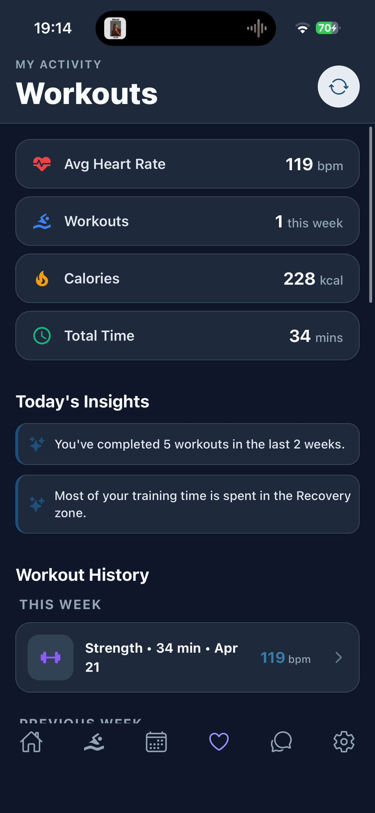
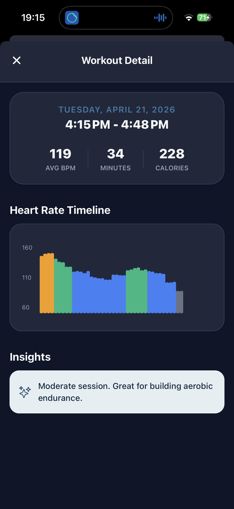
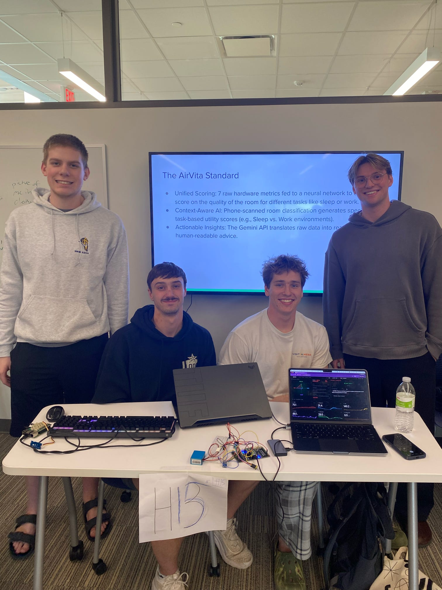
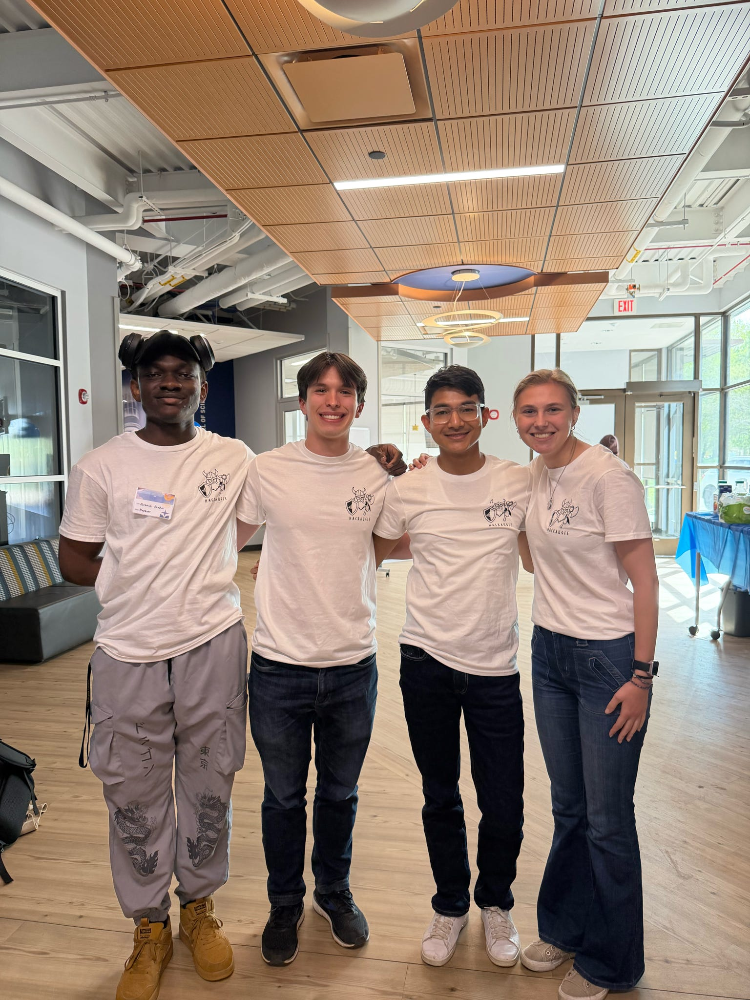

Week 11 has been a pivotal period for SwimIQ. Following a successful Sprint 2 demo, our team has shifted focus from rapid feature expansion to deep refinement and cross-platform parity. We've resolved critical native integration bugs and are now moving towards a production-ready state.
Sprint 2 Demo Success
The Sprint 2 demos were a major milestone for us. We were able to showcase the core workflow of SwimIQ from practice building to real-time communication. A major highlight was showing off the mobile side of the app for the first time, demonstrating initial heart rate integration and the athlete-facing dashboard. The feedback was overwhelmingly positive, confirming that our current trajectory aligns with the needs of both coaches and athletes.
Resolving HealthKit & Android Integration
Apple HealthKit Bug Fix
One of the primary challenges we faced earlier in the sprint was a persistent bug with pulling heart rate data from Apple HealthKit. The synchronization logic was failing to correctly map the high-frequency data points to our backend, causing omissions in the athlete's history.
We are happy to report that this has been fully resolved. By refactoring our native module bridging and improving the data serialization layer, heart rate pulling is now seamless on iOS devices.


Android Health Connect Support
With iOS stabilized, we have expanded our mobile capabilities by adding the Android version of heart rate data pulling. This leverages Google's Health Connect API, ensuring that Android users have the same high-quality data integration as their iOS counterparts. This brings us one step closer to true cross-platform parity.
Infrastructure: Moving to Docker
To facilitate a smooth deployment and ensure environment consistency across our team, we have officially switched to Docker. Containerizing the backend services allows us to package our dependencies and configurations into a single, portable unit. This move is critical for our final deployment strategy.
The Path to Sprint 3: Feature Lock & Refinement
As of this week, SwimIQ is officially in Feature Lock. This means we are no longer adding new broad features; instead, we are refining what we have built. Our primary goals for the coming weeks are:
- Security Hardening: Implementing robust security features, including enhanced authentication guards and data encryption at rest.
- UX Refinement: Smoothing out transitions, improving the responsiveness of the analytics charts, and ensuring the mobile app feels fluid and premium.
- Bug Squashing: Systematic testing to identify and resolve bugs.
Our ultimate aim is to have a stable, production-ready version of the application ready for deployment before the Sprint 3 deadline. We want the transition from development to real-world use to be as smooth as possible for our users.
Team News: Success at Hack Augie


Beyond our work on SwimIQ, the entire team participated in Hack Augie this past weekend. It was a high-energy event, and we are proud to share that all our members received recognition for their projects. Above are images of the SwimIQ team members and thier groups for the hackathon.
- Lucas, Ian, and Tyler: Received Honorable Mentions in the Health Track and were recognized in the challenge for Best Use of AI with their project, AirVita.
- Primo: Won the challenge for Best Data Insight with his project, F.I.R.E.
We all thoroughly enjoyed the hackathon experience and the opportunity to build something cool in such a short timeframe. Now, we are re-energized and ready to jump back into the final stages of SwimIQ development!
We are incredibly proud of the progress made this sprint. The foundation is solid, the features are locked, and the finish line is in sight. Stay tuned for our deployment update!